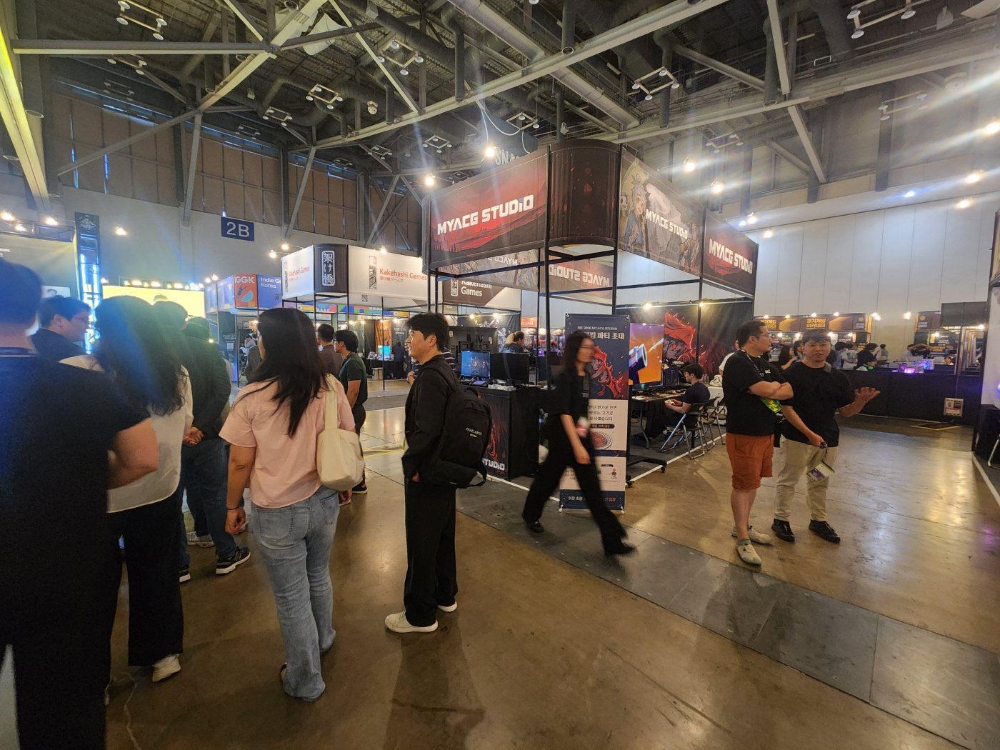
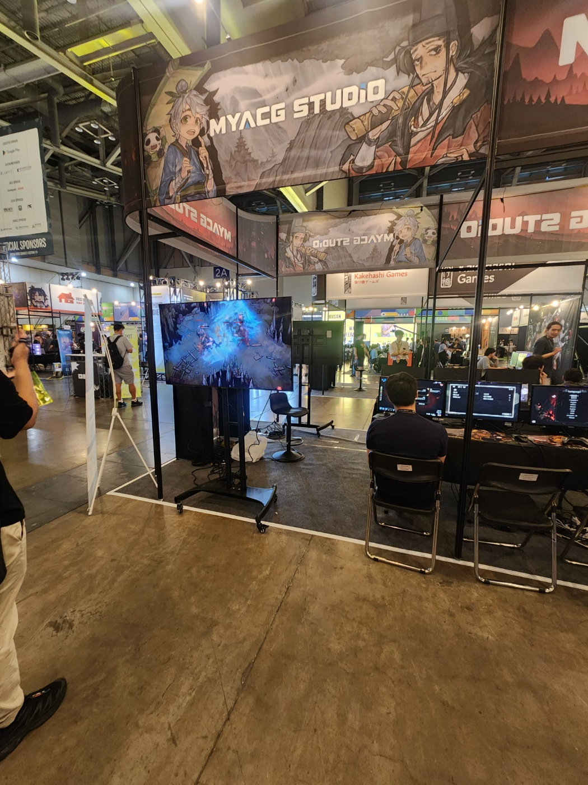
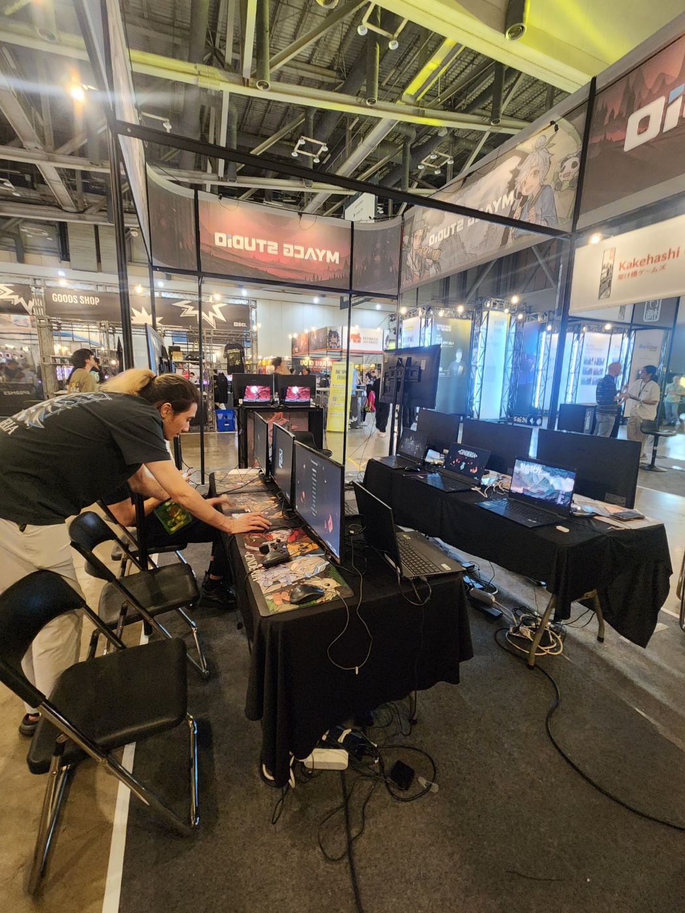
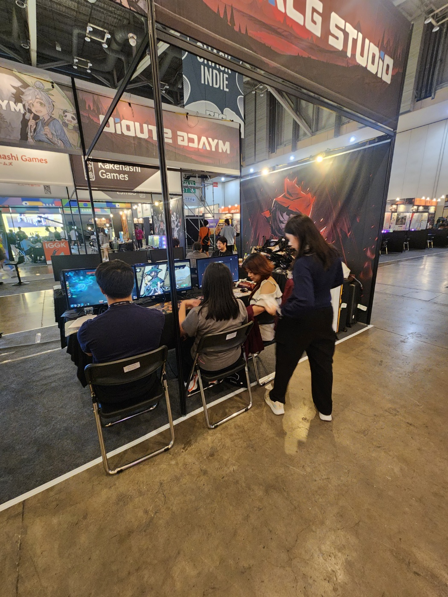
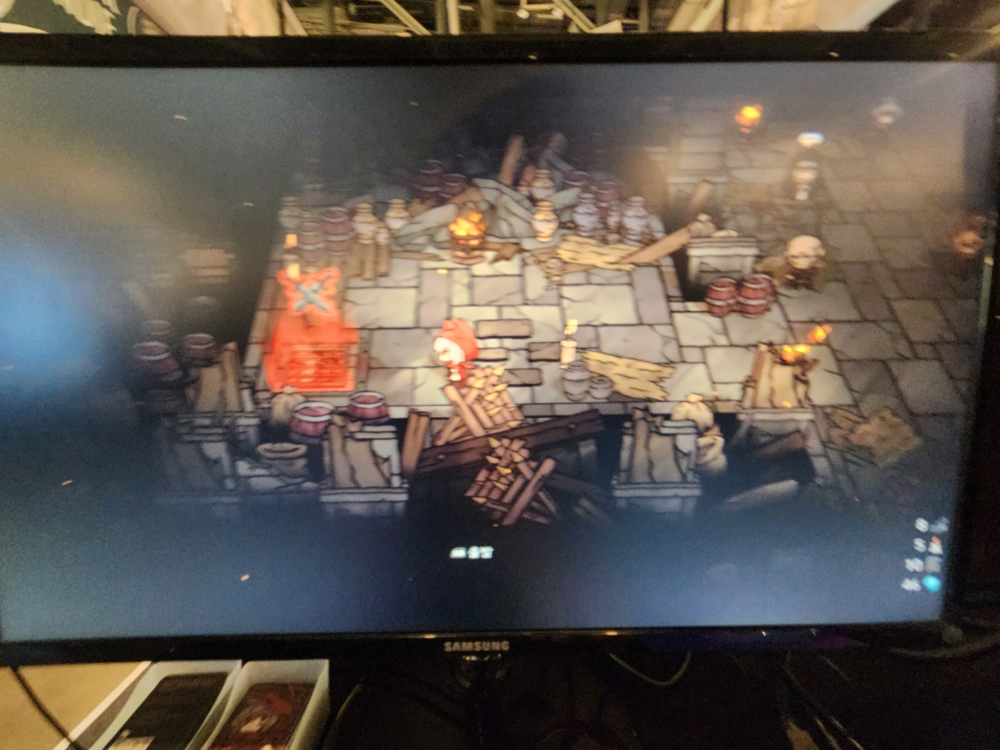
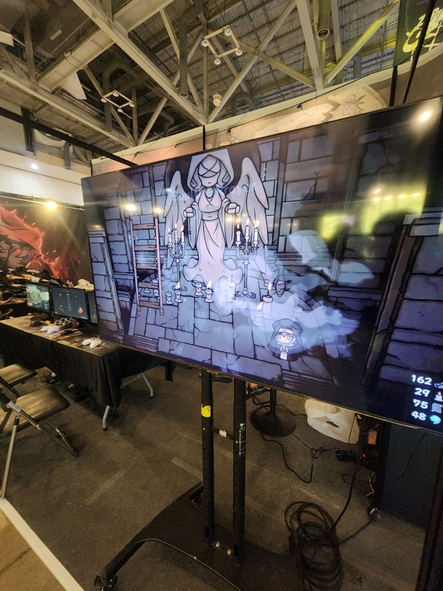
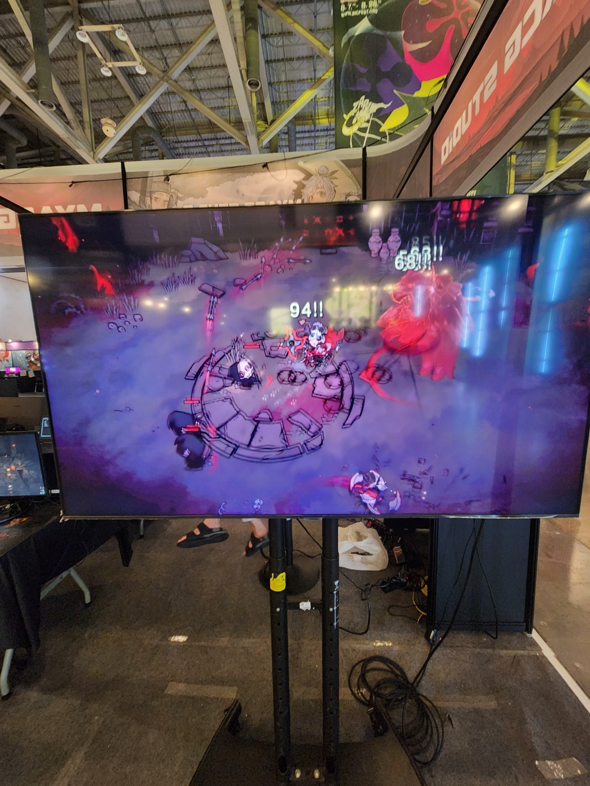
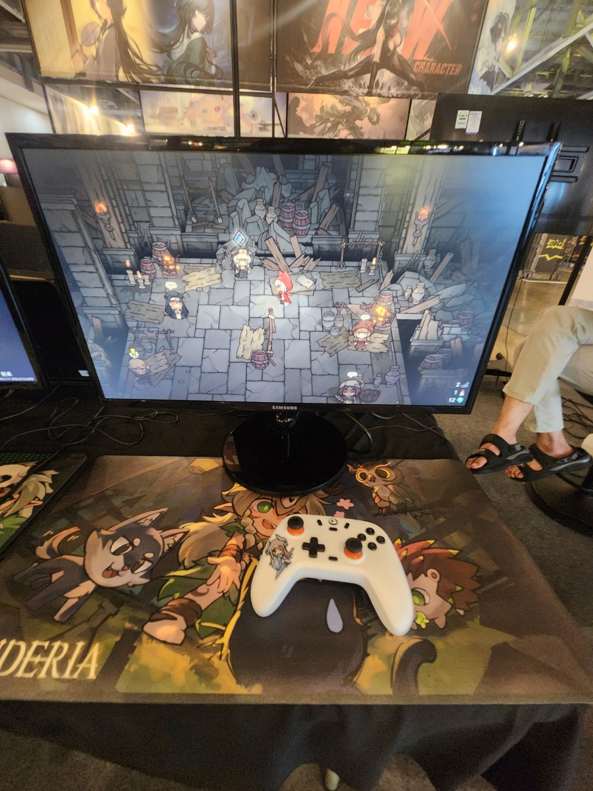

신데리아(Cinderia) 로그라이크 스팀게임 추천 BIC 2026 마지막 날, 부산 벡스코 MyACG 스튜디오 부스ㆍ항요산기 인디게임
BIC 2026 오프라인 전시가 딱 오늘(8월 16일)까지입니다. 부산 벡스코에서 열리는 이 행사, 인디게임 좋아하시는 분들이라면 한 번쯤 이름은 들어보셨을 텐데요, 마지막 날인 오늘을 앞두고 눈에 띄었던 부스 하나를 소개해 드리려고 합니다. 다크 판타지 로그라이크 액션 '신데리아(Cinderia)'를 앞세운 MyACG 스튜디오 프라임 부스인데요, 무협 로그라이크 덱빌딩 '항요산기(Yao-Guai Hunter)'도 같은 자리에 나왔더라고요.
1. BIC 2026, 오늘이 오프라인 마지막 날입니다
BIC 2026 오프라인 전시는 8월 14일(금)부터 오늘 8월 16일(일)까지, 부산 벡스코 제1전시장 2홀에서 열립니다.
| 구분 | 기간ㆍ장소 |
|---|---|
| 오프라인 전시 | 2026.8.14(금)~8.16(일) · 부산 벡스코 제1전시장 2홀 |
| 온라인 전시 | 2026.8.7(금)~8.28(금) |
온라인 전시는 오프라인보다 기간이 넉넉한 편인데요, 오프라인을 못 챙기신 분들도 온라인 전시관으로는 8월 28일까지 여유가 있는 셈입니다.
- 슬로건: '버프 유어 인디 스피릿(BUFF YOUR INDIE SPIRIT)'
- 출품: 42개국 참가, 최종 332개 작품 선정 전시

행사장 통로에서 바라본 MyACG STUDIO 부스 입구, 오가는 관람객들 사이로 배너가 눈에 띕니다
사진: MyACG 스튜디오 제공
2. MyACG 스튜디오 프라임 부스(2A) — 신데리아ㆍ항요산기 나란히 전시
이번 BIC 2026에서 MyACG 스튜디오가 프라임 부스를 열고, 신데리아와 항요산기 최신 버전을 나란히 전시하고 있습니다.

부스 위치 표지판에 '2A'라고 적혀 있고, 사무라이풍 캐릭터와 백발 소녀 캐릭터 키비주얼 배너가 함께 걸려 있어요
사진: MyACG 스튜디오 제공
부스 사진 속 위치 표지판을 보면 부스 번호는 '2A'로 적혀 있고, 사무라이풍 남성 캐릭터와 백발 소녀 캐릭터가 그려진 키비주얼 배너가 함께 걸려 있더라고요.
- MyACG 스튜디오: 2016년 설립된 독립 게임 개발사
- 구성: 프로그래머ㆍ아티스트ㆍ게임 디자이너
- 부스 운영: 단순 전시가 아니라 관람객 피드백을 직접 수렴하는 자리로 운영

시연대에 모니터ㆍ노트북이 여러 대 늘어서 있고, 스태프가 게임을 세팅하는 모습입니다
사진: MyACG 스튜디오 제공
ZDNet Korea가 8월 16일 진행한 인터뷰 기사를 보면, 업적 시스템처럼 세밀한 번역이 필요한 부분은 유저들 도움을 받아가며 손봤다고 스튜디오 측이 밝혔더라고요.
해외 판매량이 이미 중국 본토 판매량을 넘어선 상태라는 이야기도 같은 인터뷰에서 나왔습니다.
출시 계획도 구체적으로 밝혔는데요, 2027년 3월 정식 1.0 버전 출시를 목표로 개발 중이고, 그 이후에는 닌텐도 스위치ㆍ플레이스테이션 등 콘솔 플랫폼으로 확장할 계획이라고 합니다.

시연 좌석에 앉은 방문객과 스태프가 이야기를 나누는 모습, 옆으로 캐리어도 쌓여 있어 현장 분위기가 느껴지네요
사진: MyACG 스튜디오 제공
3. 신데리아(Cinderia), 다크 판타지 로그라이크 뭐가 다른가
신데리아는 마녀가 세상을 불태운 뒤 문명이 잿더미가 된 세계를 무대로 한 다크 판타지 동화풍 액션 로그라이크(로그라이트)입니다.
스팀 상점 소개 문구를 보면 "극도로 통쾌한 Rogue-lite 액션 게임. 스킬, 콤보, 패시브, 장비 등 눈에 보이는 모든 것을 자유롭게 조합해 나만의 전투 스타일을 만든다"라고 돼 있더라고요.

마을인지 폐허인지 구분이 애매한 배경 속, 붉은 두건을 쓴 캐릭터가 서 있는 탑뷰 화면입니다
사진: MyACG 스튜디오 제공
- 얼리 액세스 출시일: 2026년 3월 30일(월)
- 얼리 액세스 콘텐츠: 플레이어블 캐릭터 4종, 스킬ㆍ업그레이드 180종 이상, 장비 130종 이상, 랜덤 이벤트ㆍ룸 다수
- 예상 얼리 액세스 기간: 약 12개월(스팀 공식 안내 기준)
- 가격: 19,500원(2026.8.16 기준, 할인 없음)
- 스팀 유저 리뷰(2026.8.16 기준): 전체 4,618개 중 88% 긍정('매우 긍정적'), 한국어 리뷰만 보면 219개 중 95% 긍정
- 수상: 차이나조이 × 게임커넥션 인디게임 개발 어워드 Best Independent Game Award

천사 조각상처럼 보이는 존재와 마주한 장면, 화면 위쪽에 체력ㆍ자원 게이지가 촘촘히 떠 있어요
사진: MyACG 스튜디오 제공
이번 BIC 부스에서 시연 중인 버전은 최근 업데이트가 반영된 쪽인데요, 캐릭터 4종이 전면 리워크됐고 능력이 100종 이상 새로 추가ㆍ개편됐습니다. 여기에 신규 맵 24종, 신규 보스 2종까지 더해졌다고 하네요. 최신 패치명은 'Isdra V0.6.10'인데, 이스드라(Isdra) 캐릭터가 기존 방어 후 반격 중심 운용에서 돌진ㆍ방어ㆍ반격을 잇는 연계 공격으로 개편됐고, '가드(Guard)' 시스템이 새로 들어갔습니다.

보라색 배경 속 격렬한 전투 장면, 데미지 숫자가 화면 가득 튀어 오르는 게 액션성을 짐작하게 합니다
사진: MyACG 스튜디오 제공
스팀 상점 페이지를 보면 오늘(8월 16일) 기준으로 할인 없이 19,500원에 판매되고 있습니다. 혹시 세일 중인가 기대하신 분들이 계시다면 미리 말씀드립니다(ㅋㅋ).

던전 룸에 여러 캐릭터가 모여 있고, 시연대 위에는 하얀 게임패드와 'CINDERIA' 로고 마우스패드도 놓여 있었습니다
사진: MyACG 스튜디오 제공
4. 항요산기(Yao-Guai Hunter), 무협 로그라이크 덱빌딩도 함께
신데리아 옆에는 무협 세계관의 로그라이크 덱빌딩 게임 '항요산기(Yao-Guai Hunter)'도 같이 전시되고 있습니다.
요괴가 들끓는 세계에서 카드와 내공을 조합해 싸우는 방식인데요, 신데리아보다 먼저 자리를 잡은 게임입니다. 앞서 해보기는 2023년 4월 3일에 시작했고, 2025년 4월 17일 정식 출시를 마쳤습니다.
- 정식 출시일: 2025년 4월 17일(앞서 해보기는 2023년 4월 3일 시작)
- 가격: 18,150원(2026.8.16 기준)
- 스팀 유저 리뷰(2026.8.16 기준): 2,313개 중 84% 긍정
- 언어: 한국어 포함 다국어 지원
정식 출시작이라 신데리아보다 콘텐츠가 안정적으로 쌓여 있는 편인데요, 로그라이크에 덱빌딩까지 곁들인 조합을 좋아하시는 분들이라면 신데리아랑 같이 눈여겨보셔도 좋을 것 같습니다.
부산 근처에 계신 분들이라면 오늘 중으로 벡스코에 들러보시는 것도 방법이고, 못 가시는 분들은 온라인 전시가 8월 28일까지 이어지니 그쪽으로 챙겨보시는 것도 나쁘지 않을 것 같습니다. 신데리아는 이제 얼리 액세스 초반이라 앞으로 업데이트가 꽤 붙을 것 같은데, 정식 출시 소식이 가까워지면 다시 정리해서 들고 오겠습니다.
참고한 곳
· 신데리아(Cinderia) 스팀 상점
· 항요산기(Yao-Guai Hunter) 스팀 상점
· ZDNet Korea 인터뷰 기사